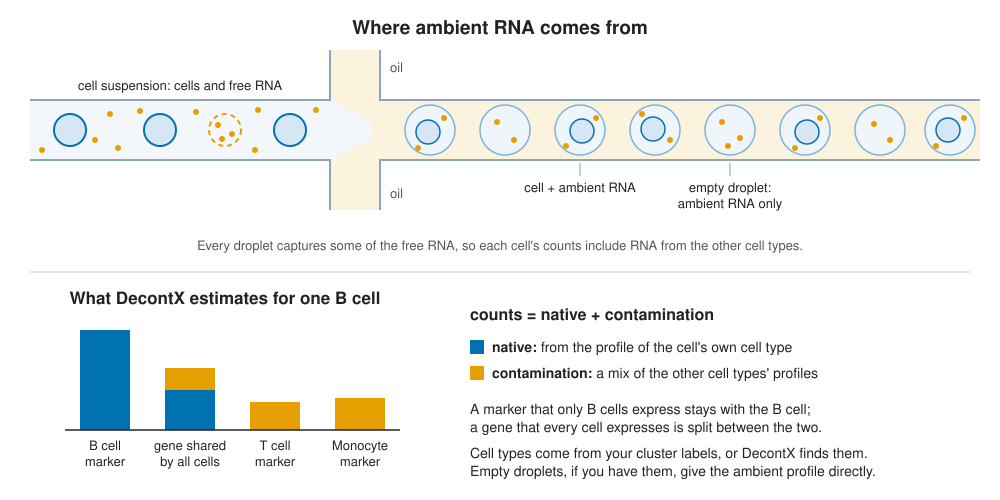
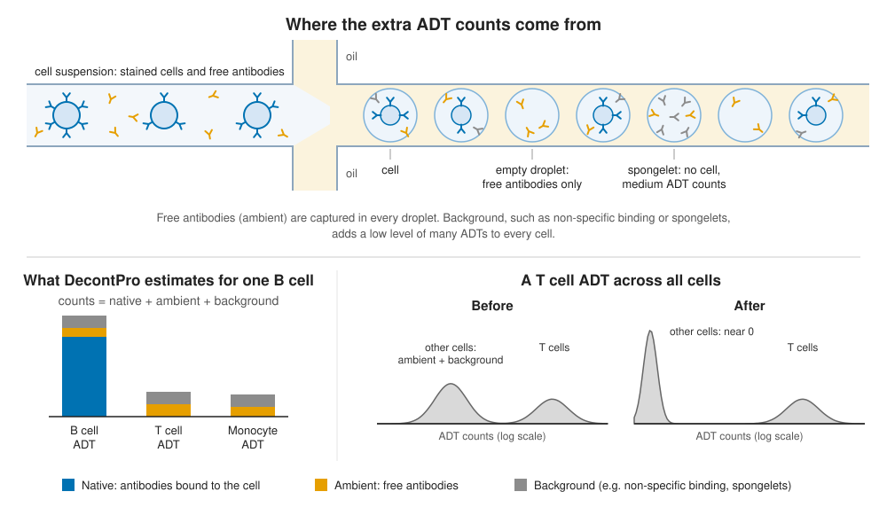

Getting started with decontX
Joshua Campbell
Boston University School of Medicinecamp@bu.edu
2026-11-23
Source:vignettes/decontX.Rmd
decontX.RmdIntroduction
In droplet-based single-cell assays, each droplet should capture one cell. But not every count in a droplet comes from its cell. Two kinds of contamination add counts that aren’t the cell’s own:
- Ambient contamination. The cell suspension holds free material, such as RNA from cells that broke open, or free antibody-derived tags (ADTs), and some of it is captured in every droplet. Its profile is a mix of all the cells in the sample, so it adds counts of genes or proteins that the cell doesn’t express: for example, T cell markers in a B cell.
- Background contamination. In protein (ADT) data, a low, non-specific level of counts for many ADTs, even in cell types that lack the protein. Possible sources include non-specific antibody binding and spongelets: droplets with no cell but a medium level of ADTs.
Contamination blurs the difference between cell types, and it can make a cell look like it expresses markers of another cell type. The decontX package estimates how much of each cell’s counts comes from contamination and removes it, with two methods.
Which method to use
| Data | Method | Function | Workflow vignette |
|---|---|---|---|
| Single-cell RNA-seq counts | DecontX (Yang et al. 2020) | decontX() |
decontX (RNA) |
| CITE-seq or other ADT counts | DecontPro (Yin et al. 2024) | decontPro() |
decontPro (Protein) |
- DecontX models each cell’s counts as a mixture of its native expression and ambient RNA from the other cell populations. It needs the counts of the called cells. Cluster labels and the empty droplets are optional: without labels, DecontX finds clusters itself; without empty droplets, it estimates the ambient profile from the cells.
- DecontPro splits each ADT count into native, ambient and background parts. It needs the counts of the called cells and a cell type or cluster label for each cell. The empty droplets are optional.
For CITE-seq data, run DecontX on the RNA counts and DecontPro on the ADT counts.

DecontX. Free RNA in the cell suspension is captured in every droplet. DecontX splits each cell’s counts into native counts, from its own cell type, and contamination, from the other cell types.

DecontPro. Free antibodies (ambient) are captured in every droplet, and background adds a low level of many ADTs to every cell. DecontPro splits each cell’s ADT counts into native, ambient and background parts.
Installation
The decontX package can be installed from Bioconductor:
if (!requireNamespace("BiocManager", quietly = TRUE)) {
install.packages("BiocManager")
}
BiocManager::install("decontX")A quick example
This example simulates RNA counts with a known amount of contamination, then lets DecontX estimate it.
# Simulate counts for 300 cells, with known contamination
simulated <- simulateContamination()
# Estimate and remove the contamination
result <- decontX(simulated$observedCounts)
# The estimated contamination of the first cells, between 0 and 1
head(result$contamination)
#> [1] 0.03487606 0.10052463 0.15500532 0.02993261 0.13786330 0.14002058The estimates follow the simulated contamination closely:
# Compare the estimates with the simulated contamination
plot(
simulated$contamination,
result$contamination,
xlab = "Simulated contamination",
ylab = "Estimated contamination"
)
# The line where the estimate equals the simulated value
abline(a = 0, b = 1)The decontaminated counts are in
result$decontXcounts.
Next steps
The workflow vignettes run each method on real data, from importing the counts to checking the results:
-
decontX (RNA),
vignette("decontX_RNA", package = "decontX"): DecontX on 10x PBMC data, with and without empty droplets, plots of the results, Seurat objects, several samples, and a FAQ. -
decontPro (Protein),
vignette("decontPro", package = "decontX"): DecontPro on CITE-seq cord blood ADT data, tuning its priors, and a FAQ.
The package website, https://campbio.github.io/decontX/, has these vignettes and the help pages of every function.
Citing decontX
Please cite the method you used:
- DecontX: Yang S, Corbett SE, Koga Y, Wang Z, Johnson WE, Yajima M, Campbell JD (2020). Decontamination of ambient RNA in single-cell RNA-seq with DecontX. Genome Biology, 21(1), 57. doi:10.1186/s13059-020-1950-6
- DecontPro: Yin Y, Yajima M, Campbell JD (2024). Characterization and decontamination of background noise in droplet-based single-cell protein expression data with DecontPro. Nucleic Acids Research, 52(1), e4. doi:10.1093/nar/gkad1032
citation("decontX") prints both references.
Session information
sessionInfo()
#> R version 4.6.1 (2026-06-24)
#> Platform: x86_64-pc-linux-gnu
#> Running under: Ubuntu 24.04.5 LTS
#>
#> Matrix products: default
#> BLAS: /usr/lib/x86_64-linux-gnu/openblas-pthread/libblas.so.3
#> LAPACK: /usr/lib/x86_64-linux-gnu/openblas-pthread/libopenblasp-r0.3.26.so; LAPACK version 3.12.0
#>
#> locale:
#> [1] LC_CTYPE=en_US.UTF-8 LC_NUMERIC=C
#> [3] LC_TIME=en_US.UTF-8 LC_COLLATE=en_US.UTF-8
#> [5] LC_MONETARY=en_US.UTF-8 LC_MESSAGES=en_US.UTF-8
#> [7] LC_PAPER=en_US.UTF-8 LC_NAME=C
#> [9] LC_ADDRESS=C LC_TELEPHONE=C
#> [11] LC_MEASUREMENT=en_US.UTF-8 LC_IDENTIFICATION=C
#>
#> time zone: Etc/UTC
#> tzcode source: system (glibc)
#>
#> attached base packages:
#> [1] stats graphics grDevices utils datasets methods base
#>
#> other attached packages:
#> [1] decontX_1.11.39 BiocStyle_2.41.0
#>
#> loaded via a namespace (and not attached):
#> [1] tidyselect_1.2.1 dplyr_1.2.1
#> [3] farver_2.1.2 loo_2.10.1
#> [5] S7_0.2.2 fastmap_1.2.0
#> [7] SingleCellExperiment_1.35.2 combinat_0.0-9
#> [9] scrapper_1.7.11 MCMCprecision_0.4.2
#> [11] digest_0.6.39 dotCall64_1.2
#> [13] lifecycle_1.0.5 StanHeaders_2.39.1
#> [15] SeuratObject_5.4.0 dbscan_1.2.7
#> [17] magrittr_2.0.5 compiler_4.6.1
#> [19] rlang_1.3.0 sass_0.4.10
#> [21] tools_4.6.1 yaml_2.3.12
#> [23] knitr_1.52 S4Arrays_1.13.3
#> [25] htmlwidgets_1.6.4 sp_2.2-4
#> [27] pkgbuild_1.4.8 DelayedArray_0.39.8
#> [29] RColorBrewer_1.1-3 abind_1.4-8
#> [31] withr_3.0.3 BiocGenerics_0.59.13
#> [33] desc_1.4.3 grid_4.6.1
#> [35] stats4_4.6.1 beachmat_2.29.3
#> [37] future_1.80.0 inline_0.3.21
#> [39] progressr_1.1.0 ggplot2_4.0.3
#> [41] globals_0.20.0 scales_1.4.0
#> [43] SummarizedExperiment_1.43.0 cli_3.6.6
#> [45] rmarkdown_2.32 ragg_1.5.2
#> [47] generics_0.1.4 otel_0.2.0
#> [49] RcppParallel_6.2.1 future.apply_1.21.0
#> [51] cachem_1.1.0 rstan_2.32.7
#> [53] parallel_4.6.1 XVector_0.53.0
#> [55] BiocManager_1.30.27 matrixStats_1.5.0
#> [57] vctrs_0.7.3 Matrix_1.7-6
#> [59] jsonlite_2.0.0 bookdown_0.48
#> [61] BiocNeighbors_2.7.3 IRanges_2.47.5
#> [63] S4Vectors_0.51.10 listenv_1.1.0
#> [65] systemfonts_1.3.2 jquerylib_0.1.4
#> [67] glue_1.8.1 parallelly_1.48.0
#> [69] spam_2.11-4 pkgdown_2.2.1
#> [71] codetools_0.2-20 gtable_0.3.6
#> [73] QuickJSR_1.11.0 GenomicRanges_1.65.4
#> [75] tibble_3.3.1 pillar_1.11.1
#> [77] htmltools_0.5.9 Seqinfo_1.3.2
#> [79] R6_2.6.1 textshaping_1.0.5
#> [81] evaluate_1.0.5 lattice_0.23-1
#> [83] Biobase_2.73.2 bslib_0.12.0
#> [85] rstantools_2.7.1 Rcpp_1.1.2
#> [87] SparseArray_1.13.5 gridExtra_2.3.1
#> [89] xfun_0.62 fs_2.1.0
#> [91] MatrixGenerics_1.25.0 pkgconfig_2.0.3